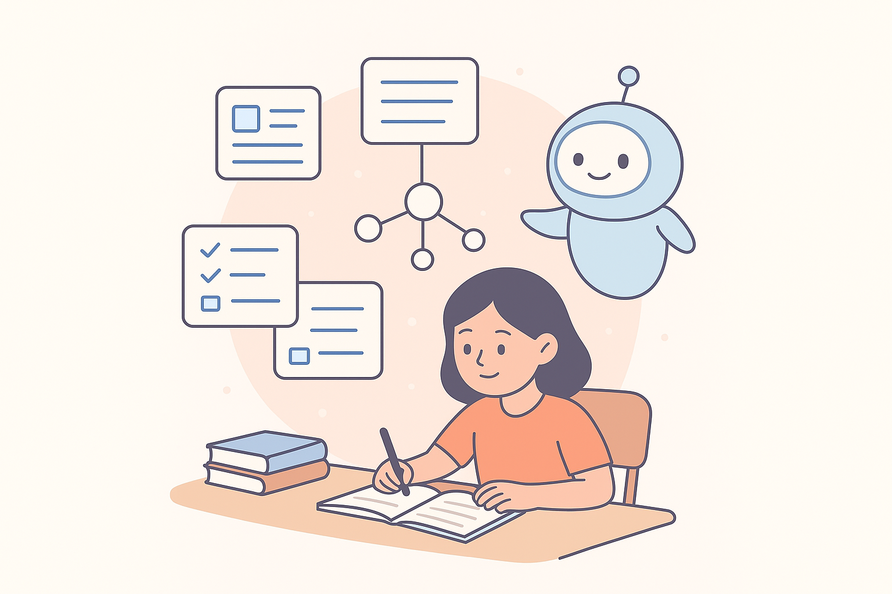
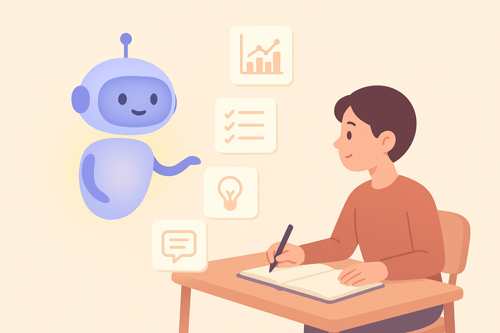

12 Schule & Studium: KI als Lern-Turbo
Wie du KI für bessere Noten, weniger Stress und klügeres Lernen nutzt.
Wenn du bisher dachtest, KI sei vor allem ein cooles Technik-Spielzeug, dann ist dieses Kapitel dein „Aha!“-Moment. Denn in Wahrheit ist generative KI – richtig eingesetzt – eines der mächtigsten Lernwerkzeuge unserer Zeit. Nicht nur, weil sie dir Aufgaben erklärt, Wissenslücken füllt oder Texte strukturiert, sondern weil sie dich arbeiten lässt wie jemand, der doppelt so viel Zeit hat.
Stell dir vor, du hättest einen persönlichen Lerncoach, der immer verfügbar ist, nie genervt ist, Erklärungen in beliebig vielen Varianten liefert und deinen Stil, dein Tempo und deine Interessen berücksichtigt. Genau das kann KI – wenn du weißt, wie du sie anleitest.
Dieses Kapitel zeigt dir, wie du KI für die Schule oder das Studium so nutzt, dass du besser, schneller und strukturierter lernst, ohne jemals „faul“ zu wirken oder Wissen zu verpassen. Im Gegenteil: Du wirst besser verstehen, was du lernst – weil du dir Erklärungen, Beispiele, Lernzettel und Übungen selbst zusammenstellst.
12.1 Warum KI ein Lern-Turbo ist – und kein Spickzettel
Die wichtigste Wahrheit zuerst:
👉 KI ersetzt *kein eigenes Denken* – aber sie bringt dich schneller dorthin.Wenn du KI richtig nutzt, passiert Folgendes:
- Du lernst Inhalte klarer.
- Du lernst schneller, weil du weniger herumraten musst.
- Du lernst tiefgründiger, weil du personalisierte Beispiele bekommst.
- Du hast mehr Kontrolle über deinen Lernprozess.
Viele Schülerinnen und Studenten kämpfen nicht mit dem Stoff selbst, sondern mit Dingen wie:
- „Wo fange ich überhaupt an?“
- „Wie strukturiere ich mein Wissen?“
- „Ich verstehe es irgendwie – aber nicht richtig.“
- „Ich brauche Übungsaufgaben, aber die Schule/Uni bietet zu wenige.“
Genau hier unterstützt dich KI auf eine Art, die fast schon unfair wirkt (aber legal, erlaubt und absolut schlau ist).

12.2 Lernzettel: Dein persönlicher „Knowledge Booster“
Lernzettel sind eines der mächtigsten Lernwerkzeuge überhaupt – aber kaum jemand nutzt sie konsequent. Warum? Weil sie Zeit kosten. Weil man oft nicht weiß, was man weglassen oder hervorheben soll. Oder weil sie auf den letzten Drücker entstehen.
Hier kommt dein KI-Vorteil ins Spiel.
👉 Was KI besonders gut kann: Lernstoff komprimieren
Du kannst KI beauftragen, dir:
- Lernzettel
- Mindmaps
- Stichpunktlisten
- Übersichten
- Konzepte in mehreren Schwierigkeitsgraden
zu erstellen – und zwar so, wie du es brauchst.
👉 Beispiel-Prompt für einen Lernzettel
Erstelle einen kompakten Lernzettel zum Thema Photosynthese,
für Schüler der 9. Klasse,
mit folgenden Abschnitten:
• Erklärung in einfachen Worten
• Kernbegriffe (mit kurzen Definitionen)
• Eine Mini-Merksatz-Zusammenfassung
• Zwei Verständnisfragen
Wichtig:
Du steuerst Struktur + Niveau.
Daher ist es keine „Abkürzung“, sondern eine Verstärkung deiner Lernkompetenz.
👉 Wie du KI-Dokumente personalisierst
Die besten Lernzettel entstehen, wenn du Folgendes ergänzt:
„Erkläre wie ein geduldiger Nachhilfelehrer.“
„Nutze Beispiele, die etwas mit Alltag/Schule zu tun haben.“
„Halte die Sätze kurz und klar.“
„Gib mir zusätzlich drei häufige Fehlerquellen und passende Gegenstrategien.“
Dadurch wird jeder Lernzettel zu deiner ganz eigenen Lernhilfe – nicht zu einem generischen Text.
12.3 Prüfungsvorbereitung: KI als persönlicher „Testtrainer“
Vielleicht ist das die coolste Anwendung überhaupt:
KI kann Prüfungssituationen simulieren, dir Fragen stellen, deinen Wissensstand testen und sogar mündliche Prüfungen als Rollenspiel durchführen.
👉 1. KI als Quizgenerator
Du kannst KI bitten:
- Multiple-Choice-Fragen
- Verständnisfragen
- Transferaufgaben
- Anwendungsbeispiele
- Lückentexte
- Mini-„Klausuren“
zu erstellen.
Beispiel:
Stelle mir 10 Prüfungsfragen zum Thema Elektrische Spannung.
Mischung: Basiswissen, Verständnis, Anwendung.
Prüfe mich wie in einer echten Schulprüfung.
👉 2. KI als Prüfer: Rollenspiel-Modus
Spiele eine mündliche Prüfung im Fach Biologie, Thema Genetik.
Stelle mir nacheinander Fragen, warte auf meine Antwort, bewerte präzise, erkläre Korrekturen und stelle dann die nächste Frage.
Dieser Modus ist extrem wertvoll, weil du:
- aktiv antworten musst
- direkt Feedback bekommst
- automatisch besser wirst
👉 3. KI als Lernplan-Generator
Viele Schülerinnen und Studenten verlieren Zeit, weil sie nicht wissen, wie man sich sinnvoll vorbereitet.
Prompt:
Erstelle für mich einen Lernplan für die nächste Woche.
Fach: Deutsch, Thema: Interpretation lyrischer Texte.
1 Stunde pro Tag.
Bitte jeweils:
– Wiederholung
– Aufgaben
– Mini-Check am Ende
12.4 Zusammenfassungen: Wenn der Text zu lang ist – oder zu kompliziert
Schule und Studium bestehen zunehmend aus langen Texten:
- Unterrichtskapitel
- PDFs
- wissenschaftliche Artikel
- Schulbuchtexte
- literarische Werke
- Politik- oder Geschichtsdokumente
Und genau hier glänzt KI.
👉 Die drei Stufen der Zusammenfassung
- Kurzfassung (1–3 Sätze)
- Standard-Zusammenfassung (ca. 150 Wörter)
- Deep Summary (mit Struktur + Begriffserklärung + Beispielen)
Der Trick besteht darin, die gewünschte Stufe klar anzugeben.
👉 Beispiel:
Fasse folgenden Text in 150–180 Wörtern zusammen.
Zielgruppe: Schüler 10. Klasse.
Stil: klar, sachlich, keine Fremdwörter.
Gib am Ende 3 Verständnisfragen.
Oder:
Erstelle eine Deep Summary mit folgenden Bausteinen:
– Kernaussage
– Schlüsselbegriffe
– Ursache-Wirkungs-Ketten
– Beispiel aus dem Alltag
👉 Zusammenfassungen als Lernhilfe
Du kannst auch stilisierte Formen anfordern:
- „Summary mit Emojis“
- „Summary als Mindmap“
- „Summary als Bulletpoints“
- „Summary im Format eines Lernposters“
Denk dran:
Je klarer die Form, desto hilfreicher das Ergebnis.
12.5 Nachhilfe mit KI: Lernen in deinem Tempo
Einer der stärksten Anwendungsfälle:
KI erklärt jedes Thema – und zwar beliebig oft und auf beliebig vielen Niveaus.
👉 Die 4 wichtigsten Nachhilfe-Modi
1. Erkläre wie für Anfänger
Erkläre mir das Thema „Bruchrechnung“ so, als hätte ich null Vorwissen.
Verwende einfache Worte und ein Beispiel aus dem Alltag.
2. Erkläre auf mehreren Niveaus
Erkläre mir Photosynthese in drei Varianten:
– Für 10-Jährige
– Für Schüler der 8. Klasse
– Für Biologie-Leistungskurs
3. Erkläre mit Analogien
Erkläre Mikroökonomie anhand eines Beispiels aus einem Skate-Shop.
Analogien machen abstrakte Dinge greifbar – und KI kann sie maßgeschneidert erzeugen.
4. Erkläre Schritt für Schritt
Erkläre Buchführung Schritt für Schritt wie ein geduldiger Tutor.
Dieser Modus ist gold wert, wenn du den Überblick verloren hast.

12.6 Unterrichtsimpulse & Referate: Wenn KI dir den kreativen Kick gibt
Viele Schüler und Studierende verzweifeln nicht an Inhalten, sondern an Ideen. Ein Referat wirkt plötzlich riesig:
- „Wie fange ich an?“
- „Wie strukturiere ich das?“
- „Welche Perspektive ist spannend?“
KI kann dir helfen, den Einstieg zu finden – ohne dir die Arbeit abzunehmen.
👉 Beispiel: Unterrichtsimpuls
Gib mir 7 kreative Ideen, wie man das Thema „Digitalisierung im Alltag“ spannend im Unterricht einführen könnte.
Zielgruppe: 10. Klasse.
Stil: modern, interaktiv, alltagsnah.
👉 Beispiel: Referatsstruktur
Erstelle eine klare und logisch aufgebaute Gliederung für ein 10-minütiges Referat über „Der Regenwald: Bedeutung und Gefahren“.
Baue auch zwei Diskussionsfragen ein.
👉 Beispiel: visuelle Unterstützung
Gib mir fünf Ideen für Bilder oder Diagramme, die mein Referat anschaulicher machen.
Diese Impulse sind oft der entscheidende Unterschied zwischen einem durchschnittlichen Referat und einer Präsentation, die im Gedächtnis bleibt.
12.7 Unterrichtsimpulse: Wenn du Input für Lehrer/-innen brauchst – oder selbst geben willst
Vielleicht hast du es schon erlebt: Eine Lehrkraft stellt eine offene Frage in den Raum, die eigentlich total spannend sein könnte – aber niemand meldet sich. Oder du bekommst das Thema für einen Projekttag und denkst dir: „Mit etwas Inspiration könnte das richtig cool werden…“
Genau hier kann KI glänzen.
👉 Warum KI perfekt für Unterrichtsimpulse ist
KI kann:
- ungewöhnliche Perspektiven auf ein Thema vorschlagen
- Projektideen entwickeln
- Diskussionsthemen generieren
- Blickwinkel vergleichen (z. B. historisch, wissenschaftlich, gesellschaftlich)
- kleine Denkanstöße liefern, die dich sofort motivieren
Viele Lehrkräfte nutzen KI mittlerweile selbst – aber du kannst sie genauso gut als Inspirationsquelle einsetzen.
👉 Beispiel: Ein kurzer Impuls für den Geschichtsunterricht
Prompt:
„Gib mir drei kreative Diskussionsanregungen für den Geschichtsunterricht zum Thema Industrialisierung. Jede Anregung soll eine überraschende, aber verständliche Perspektive enthalten.“
Typische KI-Antwort:
- Wie hätte die Industrialisierung ausgesehen, wenn soziale Medien bereits existiert hätten?
- Welche heutigen Technologien würden die Lebensbedingungen der Arbeiterinnen und Arbeiter 1850 verändern – und warum?
- In welchen Bereichen unserer heutigen Welt findet eine Art „zweite Industrialisierung“ statt?
Zack – schon wirkt das Thema lebendig.
12.8 Referate & Präsentationen: Von der Idee zur Folie in Minuten
Viele Schülerinnen und Schüler verzweifeln nicht am Sprechen, sondern an der Vorbereitung:
- Wo soll ich anfangen?
- Was gehört wirklich in ein gutes Referat?
- Wie baue ich eine Struktur, die nicht langweilig ist?
- Was, wenn ich nicht weiß, wie man ein Thema „erklärt“?
Mit KI kannst du diese Hürden minimieren.
👉 Die 4-Schritt-Methode für perfekte KI-Referate
Gib der KI eine klare Struktur
„Einleitung – Hauptteil – Beispiele – Fazit“Sage, wie alt du bist und für wen du präsentierst
„Für den Biounterricht der 10. Klasse“Sag der KI, wie lang etwas sein soll
„Max. 2 Minuten Redezeit pro Abschnitt“Lass dir optional Folien-Layouts geben
Zum Beispiel:- 1 Titel-Folie
- 3 Inhaltsfolien
- 1 Schlussfolie
- 1 Titel-Folie
👉 Beispielprompt
„Erstelle ein klar strukturiertes Referat über Photosynthese für die 10. Klasse.
Gliedere es in Einleitung – Hauptteil – Beispiele – Fazit.
Erkläre leicht verständlich, möglichst ohne Fachjargon.
Gib außerdem eine Folienstruktur mit kurzen Stichpunkten.“
Die KI liefert sofort eine verwertbare Rohfassung. Mit 2–3 Anpassungen klingt es dann wie dein Referat, nicht wie KI-Standardtext.
12.9 Quellenprüfung: Vertrauen ja – blind verlassen nein
Viele junge Menschen wissen bereits: KI macht Fehler. Aber das ist gar nicht schlimm – es ist nur wichtig, zu wissen, wo und warum das geschieht.
👉 Warum KI falsche Quellen erzeugen kann
- KI merkt sich Muster, nicht echte Websites
- Sie „denkt“: Wenn viele Quellen in dieser Form vorkommen, kann ich sie imitieren
- Dadurch entstehen realistisch wirkende, aber ausgedachte Bücher, Artikel oder Links
- Dies nennt man „Halluzinationen“ – und sie sind normal
Aber du kannst sie verhindern.
👉 So prüfst du KI-Quellen richtig
Schritt 1: Fordere echte Links oder reale Titel
„Gib mir ausschließlich echte, überprüfbare Quellen.“
Schritt 2: Lass die KI erklären, warum eine Quelle relevant ist
„Erkläre zu jeder Quelle in 1 Satz, warum sie verlässlich ist.“
Schritt 3: Überprüfe jeden Link selbst
Wenn der Titel oder die Seite nicht existieren → verwerfen.
👉 Mini-Beispiel
Prompt:
„Nenne drei reale, überprüfbare Quellen zum Thema Klimawandel für ein Schulreferat der 9. Klasse. Kein erfundener Inhalt.“
Typische KI-Antwort (diesmal korrekt):
- IPCC (Intergovernmental Panel on Climate Change) – offizielle wissenschaftliche Berichte
- Umweltbundesamt (Deutschland) – Daten & Fakten
- NASA Climate – wissenschaftlich geprüfte Visualisierungen & Forschung
👉 Wichtig:
Du bist am Ende die Person, die Verantwortung für die Quellen trägt – nicht die KI. Mit dieser Methode bleibt alles zuverlässig.
12.10 Kombiniere alles: Dein eigener Lern-Workflow mit KI
Wenn du das Kapitel bis hierhin gelesen hast, besitzt du ein ganzes Werkzeugset. Jetzt führen wir es zusammen.
Hier ist ein möglicher 5-Schritte-Prozess, der in Schule & Studium immer funktioniert.
🔹 Schritt 1: Erstes Verständnis bekommen
Prompt-Beispiel:
„Erkläre mir das Konzept x so, als wäre ich 13 Jahre alt, und gib mir zwei Beispiele aus dem Alltag.“
🔹 Schritt 2: Lernzettel erzeugen
„Erstelle einen klar strukturierten Lernzettel für Thema X, mit maximal 10 Bullet-Points pro Abschnitt.“
🔹 Schritt 3: Zusammenfassung mit Fokus auf Prüfungsrelevanz
„Fasse das folgende Kapitel so zusammen, als würdest du mich für eine Klassenarbeit vorbereiten. Nur das Wichtigste.“
🔹 Schritt 4: Lücken identifizieren
„Welche drei Aspekte fehlen mir noch, um das Thema wirklich zu verstehen?“
🔹 Schritt 5: Üben, testen, festigen
„Erstelle 5 Übungsfragen zu dem Thema.
Drei leicht, zwei mittel.
Sag mir nach jeder Antwort, ob sie richtig ist und wie ich sie verbessern kann.“
Dieser Workflow funktioniert in:
- Mathe (ohne CoT trotzdem verständlich)
- Bio, Geschichte, Politik
- Fremdsprachen
- Chemie & Physik (Erklärungen ohne schwere Formeln)
- Informatik
- sogar Kunst und Musik
Wenn du diesen Prozess regelmäßig nutzt, wirst du merken:
Du lernst schneller, strukturierter und mit weniger Stress.
12.11 Fallbeispiel: Ein ganzer Lernprozess in 10 Minuten
Um dir zu zeigen, wie das alles zusammenkommt, schauen wir uns eine typische Situation an.
👉 Die Ausgangslage
Du schreibst morgen eine Deutsch-Klassenarbeit über „Erzählperspektiven“. Du hast gelernt, aber es ist vieles unscharf.
👉 Schritt 1: Schnelle Übersicht
„Gib mir eine einfache Erklärung der Erzählperspektiven (Ich-Form, personale, auktoriale), jeweils mit Alltagsbeispiel.“
👉 Schritt 2: Kleine Merkhilfe
„Erstelle eine Merkbilder-Eselsbrücke für jede Perspektive.“
– Ich-Form → Selfie
– Personale → Bodycam
– Auktorial → Drohnenkamera
👉 Schritt 3: Mini-Lernzettel
„Fasse alles in 12 Bullet-Points zusammen.“
👉 Schritt 4: Testfragen
„Stelle mir drei Verständnisfragen und bewerte meine Antworten.“
👉 Schritt 5: Erweiterung
„Gib mir ein kurzes Textbeispiel und lass mich die Perspektive bestimmen.“
👉 Ergebnis:
Du bist in 10 Minuten sicherer als nach einer Stunde ohne KI – nicht weil KI „für dich lernt“, sondern weil sie deinen Denkprozess klärt und strukturiert.
12.12 Transparenz: Was KI im Lernen nicht ersetzen kann
So mächtig KI ist – sie ersetzt nicht:
👉 echtes Nachdenken
👉 das Formulieren eigener Gedanken
👉 das Anwenden von Wissen
👉 die Fähigkeit, Inhalte kritisch zu prüfen
👉 Lehrkräfte oder echte Diskussionen mit Menschen
Merke dir:
👉 KI ist ein Turbo – aber du bist der Motor.Wenn du sie klug einsetzt, wirst du schneller, besser und selbstbewusster.
Wenn du sie blind einsetzt, wirst du unsicherer.
Also: Immer mitdenken.
Immer prüfen.
Immer nachfragen.
12.13 Ausblick auf Kapitel 13
Im nächsten Kapitel wechseln wir von Schule und Lernen hin zu einem Bereich, der besonders viele Jugendliche begeistert: Kreativität, Social Media und digitale Projekte. Du erfährst, wie KI dir hilft, Content-Ideen zu finden, coole Geschichten zu entwickeln, TikTok- und YouTube-Workflows zu vereinfachen und Bild- sowie Videoprompts leicht zu meistern. Kapitel 13 zeigt dir, wie du KI nicht nur als Lernhilfe, sondern als kreativen Partner einsetzt – für Posts, Storys, Skripte, Designs und alles, was du ausdrücken willst.